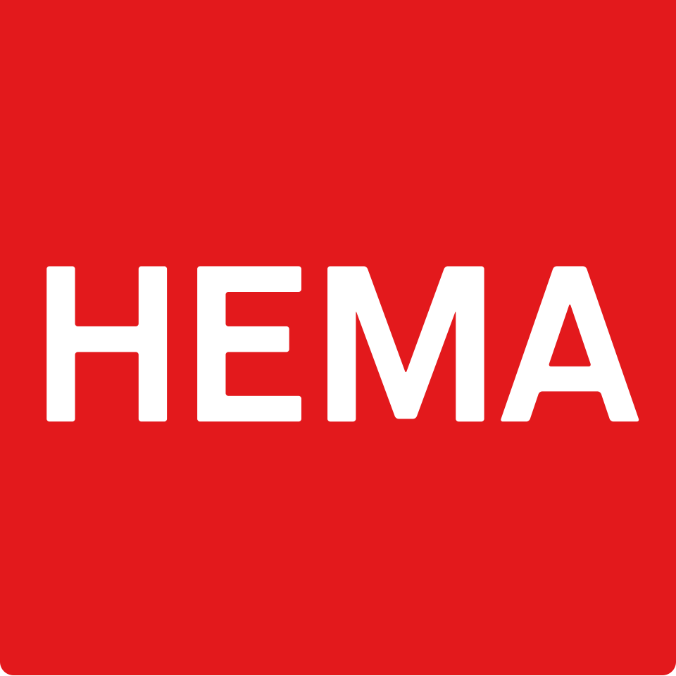
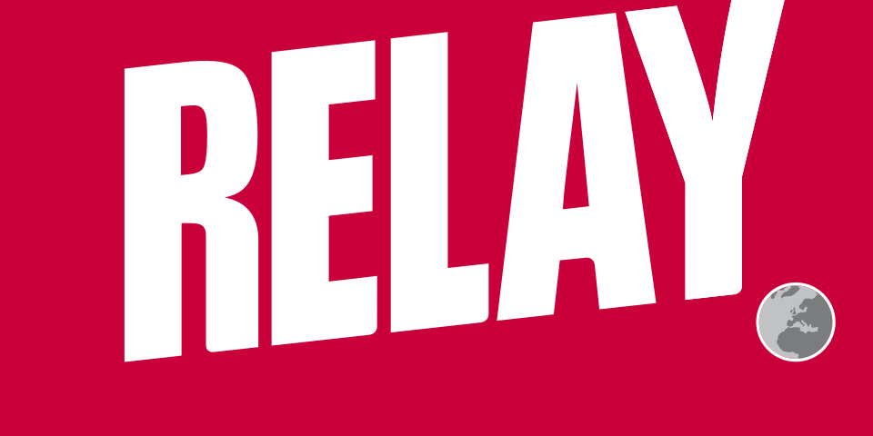
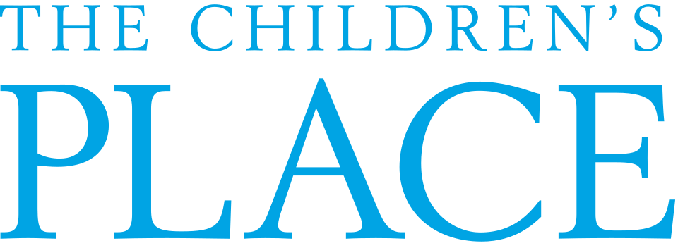

대표 로고대표 브랜드 마크
대표 로고대표 브랜드 마크홈 > 브랜드 매거진 > 다이소
다이소
다이소(DAISO)는 아성다이소가 운영하는 대한민국의 균일가 생활용품 리테일 브랜드다. 문구·주방·수납 등 다양한 생활용품을 균일가에 판매하며 전국 대규모 매장망을 갖췄다.
산업 분야 리테일·커머스 · 공개 등급 디렉토리 · 브랜드 평가 4.3 ★
한눈에 보는 브랜드
다이소(DAISO)는 아성다이소가 운영하는 대한민국의 균일가 생활용품 리테일 브랜드다. 문구·주방·수납 등 다양한 생활용품을 균일가에 판매하며 전국 대규모 매장망을 갖췄다.
브랜드 관점
다이소는 균일가 정책과 광범위한 생활용품 구색으로 국내 생활용품 리테일을 대표하는 브랜드다. 설립·운영 주체, 핵심 제품, 시장 포지션을 함께 보면 리테일·커머스 안에서의 위치가 또렷해진다.
브랜드 아이덴티티
다이소의 정체성은 생활밀착형 상품, 낮은 가격대, 빠른 상품 회전, 높은 매장 접근성에서 형성됩니다.
제품과 서비스
문구·주방·수납·청소·인테리어 소품 등 생활용품 전반을 균일가로 판매한다. 시즌·트렌드 상품을 빠르게 회전시키는 구성이 특징이다.
현재 상태
타임라인
정리된 연도형 이벤트가 없습니다.
BI/CI 변천사
대표 로고대표 브랜드 마크함께 읽을 브랜드
 리테일·커머스 · 자료 기반롯데백화점
리테일·커머스 · 자료 기반롯데백화점롯데백화점은 롯데쇼핑이 운영하는 대한민국의 대표 백화점 브랜드다. 1979년 서울 소공동 본점을 열었으며 국내 백화점 업계 1위로 최다 점포망을 갖췄다.
Gr
Graza
리테일·커머스 · 편집 검수Graza그라자(Graza)는 미국의 D2C 올리브오일 브랜드로, 2022년 1월 출시 이후 밝은 녹색의 짜는 스퀴즈 보틀과 단일산지 스페인 올리브오일로 빠르게 성장한 식품...
리테일·커머스 · 자료 기반Dollarama달러라마(Dollarama)는 캐나다 최대의 1~5달러 균일가 저가 소매 체인이다.

리테일·커머스 · 자료 기반HEMA헤마(HEMA)는 1926년 네덜란드 암스테르담에서 설립된 생활용품·의류·식품 등을 취급하는 종합 잡화점 체인이다.
 리테일·커머스 · 자료 기반Jumbo
리테일·커머스 · 자료 기반Jumbo점보(Jumbo, Jumbo S.A.)는 1986년 그리스에서 출범한 장난감·유아·생활용품 소매 체인이다. 장난감 전문점에서 멀티카테고리 대형마트로 성장한 그리스의...

리테일·커머스 · 자료 기반Relay를레(Relay)는 공항·기차역에 입점하는 신문·잡지·여행 편의 소매 브랜드다. 1852년 기원을 둔 프랑스의 라가르데르 트래블 리테일이 운영하며 전 세계 여행 거점...

리테일·커머스 · 자료 기반The Children's Place더 칠드런스 플레이스(The Children's Place)는 1969년 데이비드 풀버와 클린턴 클라크가 미국에서 설립한 아동의류 전문 소매 브랜드다. 북미 최대급...
 리테일·커머스 · 자료 기반Van Leest
리테일·커머스 · 자료 기반Van LeestVan Leest는 네덜란드의 리테일·커머스 브랜드로, 상품 큐레이션, 가격 체계, 매장·온라인 유통, 구매 편의성이 브랜드 인식을 좌우하는 영역입니다.